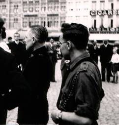
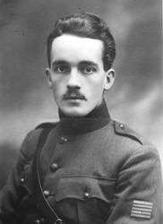
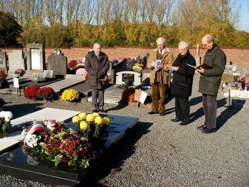
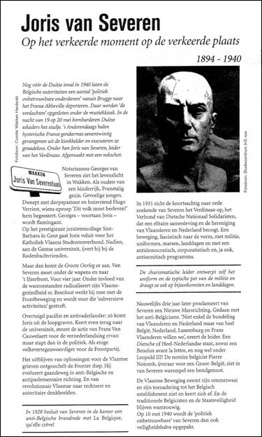
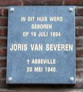

> nieuwsbrief > 2017 - nr 1
Inhoud
De jaarwisseling nadert met rasse schreden – en meteen
ook het tijdstip voor het hernieuwen van de bijdragen voor 2017.
Dank zij een zuinig beheer blijft het ons mogelijk om,
niettegenstaande alweer gestegen druk- en portkosten, de
minimumbijdrage te behouden op 29 €. In ruil daarvoor verzekeren
we u andermaal de stipte toezending van het nieuwe Jaarboek
Joris van Severen – het 21e al – in de meimaand en van de vier
nummers van ons kwartaalblad Nieuwsbrief Joris van Severen. Vanaf het bedrag
van 35 € boeken we u met dank als steunend lid. Vereffening
graag via onze rekening IBAN: BE71 0001 7058 1469 – BIC:
BPOTBEB1 t.n.v. Studiecentrum Joris van Severen,
Paddevijverstraat 2, 8900 Ieper (zie bijliggend betaalformulier
Grote Fotobiografie
Joris van Severen en het Verdinaso
Deze prestigieuze uitgave is nog maar beperkt
voorradig. Deze uitgave in album-formaat met DVD-bijlage waarop
historische Verdinaso- en Jong-Dinaso-filmen naast beelden van
een bedevaart naar de graven van Joris van Severen en Jan
Ryckoort, leent zich voortreffelijk al geschenkidee. Ze wordt u
portvrij toegezonden na overboeking van 55 € (ledenprijs) of 65
€ (niet-leden) op de hierboven vermelde rekening van het
Studiecentrum te Ieper.
Joris van Severen en Leo Poppe
op de Grote Markt te Brugge n.a.v. een Landdag van het
Verdinaso
“(…) Leo Poppe (1911-1997) was
een Gentenaar. Geboren in de Gentse havenbuurt, de Muíde, liet
hij zich als kind reeds vroeg beïnvloeden door de Vlaamsgezinde
gedachten van zijn broederleraar, een oud-aalmoezenier uit de
Eerste Wereldoorlog. Hier werd de voedingsbodem gelegd voor
Poppe’s toekomstig rechts-revolutionair gedachtegoed. In zijn
tienerjaren werd hij door toedoen van zijn tien jaar oudere
vriend en verre buur Jef François een aanhanger van de dichter
en Diets-nationalíst Wies Moens en begon hij geestdriftig te
schrijven in allerlei periodiekjes met Vlaams-nationale inslag.
Een nog grotere persoonlijkheid voor de jonge knaap was de
leider van het Verdinaso, Joris van Severen, die - aldus Poppe -
zijn "leven heeft getekend". Zijn engagement als overtuigd
Dinaso startte in 1932 met de uitbouw van de
Verdinaso-jeugdbeweging. Hij zorgde onder meer voor de
uniformisering, publiceerde geregeld in het tijdschrift Hier Dinaso! en schreef
het officiële lied [het Vlaggelied,
nvdr] van de beweging. Midden 1930 werkte Poppe eerst als
bediende voor de Gentse verzekeringsmaatschappij De Noordstar en
ging nadien aan de slag als journalist bij De Gentenaar. Gedurende
de oorlog en vooral vanaf het voorjaar van 1941, koos Poppe
voluit voor de collaboratie. Hij werd benoemd tot stafleider van de
Nationaal-Socialistische Jeugd Vlaanderen en werd de uitgever en
hoofdredacteur van De
Jonge Nationaal-Socialist en redacteur van het
VNV-weekblad De
Nationaal-Socialist. Als stafleider reisde hij doorheen het
bezette Europa en kwam hij onder meer in contact met falangisten
uit Spanje. In september 1944 week Poppe uit naar Duitsland. Hij
werkte er op hetzelfde elan verder, nam de propaganda van de
Vlaamse Landsleiding op zich en gaf mee het blad Vlaanderen Vrij! uit.
Na de laatste bombardementen in 1945 belandde Poppe via Berlijn
in Hamburg. Noodgedwongen begon hij met enkele kameraden aan
zijn reis huiswaarts. (…)”
________________
Bron: Sophie Gyselinck, ‘Leo Poppe,
een Vlaming op weg naar Argentinië’, in ADVN-Mededelingen 53,
3e trimeter 2016, pp. 4-11 en, breder geïllustreerd in Wetenschappelijke tijdingen,
nr. 3/2016, pp. 227-262.
Nota van de
Nieuwsbriefredactie: over de laatste maanden van
Poppe’s collaboratie, zijn terugkeer naar Vlaanderen en zijn
uiteindelijke uitwijking naar Argentinië brengt Kristof Papin
verslag uit in het Jaarboek
Joris van Severen 21 (2017). Over de repressietijd en zijn
onderduiken in Frankrijk bracht Poppe verslag uit in zijn in
1995 door Oranjejeugd uitgegeven relaas met als titel Herinneringen aan een
bewogen tijd.
Visite à
Extrait du journal de Charles
Gouzée de Harven 1
30 Juin
1942
Charles Gouzée de
Harven
Comme nous en avions
depuis longtemps formé le projet nous décidâmes de partir ce
soir même pour Bruges en pèlerinage aux lieux où vécu notre cher
Georges van Severen.
Après avoir dîné au
“Panier d’Or” sur la grande place, nous sommes allés à quelques
pas de là à la “Croix de Bourgogne”, une petite place à laquelle
on accède en passant sous une voûte qui donne dans la rue aux
Laines. C’est là qu’habitait Georges, dans
une grande maison de briques roses, de style espagnol dont la
façade principale regarde un tranquille petit canal où voguent des
cygnes et qu’enjambe un pont de pierre à dos d’âne à une seule
arche. Je ne connais pas de paysage urbain plus calme, plus
mélancolique, plus imprégné de douceur. Ses grands yeux intenses
devaient s’y poser bien souvent pour s’emplir du charme infini
de son vieux pays flamand.
On pénètre dans la
maison de Georges par une porte donnant sur la petite place et
où conduit un escalier de pierre bordé d’un mur bas.
Rachel [Baes] sonna à
plusieurs reprises, personne n’ouvrit, le gardien était sorti.
Par une fenêtre qui est à droite de la porte et dont les
rideaux, serrés par leur milieu, permettent de voir l’intérieur,
nous avons plongé nos regards dans la vaste et haute pièce déjà
envahie par la pénombre où Georges avait installé son bureau.
J’ai reconnu, placé dans
le fond, le bureau rouge et noir que j’avais vu dans le bureau
de Saint Michel lez Bruges lorsque j’étais allé le voir en 1935.
Rachel qui y a vécu pendant des mois, les dernières années, dans
l’intimité de Georges, et qui avait choisi avec lui cette
demeure de la “Croix de Bourgogne” me faisait remarquer à
travers la vitre les objets familiers qui s’effaçaient peu à peu
dans la maison du cher mort. L’heure était poignante...
Le lendemain nous sommes
retournés à la “Croix de Bourgogne”. Cette fois le gardien, un
jeune et sympathique “Dinaso”2 disciple de Georges,
nous a ouvert. Nous avons longuement visité d’abord le bureau et
la bibliothèque, deux grandes chambres de plein pied
communiquant par une porte et dont toutes les hautes fenêtres
ouvrent sur le calme canal aux eaux dormantes. Quelle émotion
m’étreignait quand je considérais ces murs et chacun de ces
objets qui composaient le cadre de l’existence de mon pauvre
Georges! Rachel me
montrait tout, commentant pour moi les moindres détails de cet
intérieur où je les imaginais tous les deux.
J’ai longuement inspecté
la bibliothèque. Il s’y trouve des livres fla-mands, des livres
allemands et quelques traductions de livres anglais, mais le
nombre des livres français dépasse de très loin tous les autres
réunis. Et ces livres sont presqu’exclusivement modernes ou
plutôt contemporains.
L’inventaire devrait en
être dressé. Il révélerait de façon très complète les goûts et
les idées de Georges de même que son évolution si riche de sens.
Peu de poètes: Baudelaire, Rimbaud qu’il relisait sans cesse.
Pas d’ouvrage historique je crois. L’œuvre de Proust, de Gide,
de Montharlent, Drieu
J’ai noté aussi des
livres d’écrivains d’Action Française: Maurras Bainville,
Daudet, ainsi que ceux de dissidents comme Georges Valois et
Bernanos. Les classiques m’ont frappé par leur absence complète,
de même que les livres sur 1’art, bref la bibliothèque d’un
grand vivant, passionné pour les hommes et les idées de son
temps et tournant délibérément le dos au passé qu’il n’ignorait
pas, mais auquel il ne portait pas d’intérêt.
Au mur, au-dessus de la
belle cheminée Empire de sa bibliothèque, un attachant tableau
de Rachel, une grande fleur chimérique et noble émergeant d’un
vase sombre. Que de fois il a dû la contempler dans sa solitude
en pensant à elle...
Sur le bureau un livre
dont les dernières pages n’étaient pas coupées: Cadences de Jacques
Chevalier. Un calendrier de 1940 à la date du 10 mai, jour où
Georges a été arrêté pour gravir un horrible calvaire qui n’a
pris fin que le 20 mai à Abbeville, où il a été sauvagement
massacré par la soldatesque affolée. Sur une table, non loin de
là, à côté de sa tunique et de sa casquette de “Dinaso”, un
feutre bleu foncé, retrouvé sur les lieux du drame et dont le
bord postérieur est troué comme par une balle tirée à bout
portant au moment peut-être où il gisait déjà à terre, blessé
par la première décharge. J’ai dû me contenir pour ne pas
pleurer...
En quittant le bureau
nous sommes descendus dans la salle à manger située au ras de
l’eau, juste en dessous. Là des meubles avaient été enlevés par
le gardien qui fait usage de cette pièce. Mais Rachel m’en a
décrit en détail la disposition primitive.
Ensuite, nous sommes
montés pour visiter la chambre à coucher. Une grosse déception
nous y attendait. Les gens du Verdinaso avaient fait quelque
temps auparavant une exposition à l’occasion du second
anniversaire de sa mort et sa chambre avait été entièrement
déménagée à cet effet. Plus un meuble n’y était resté.
Rachel en dépit de ses
efforts pour paraître calme en présence du jeune Dinaso qui nous
suivait partout, était visiblement navrée de cette stupide et
inutile profanation de l’intimité de Georges. Moi-même, qui
m’attendais à retrouver encore tout en l’état comme au jour de
l’arrestation, j’en éprouvais une peine profonde.
Nous avons quitté la
maison silencieux.
Le lendemain matin, je
suis revenu tout seul à la “Croix de Bour-gogne”. Je ne suis pas
entré. Je me suis longuement accoudé au-dessus de l’eau rêvant à
Georges. Le jeune Dinaso, gardien de la maison qui m’avait
aperçu, vint interrompre ma rêverie. Pendent notre visite de la
veille il avait écouté les propos que Rachel et moi échangions
au sujet de Georges et il désirait connaitre mon adresse, me
dit-il, pour m’écrire et me demander des renseignements pour un
livre qu’il prépare sur son Chef.
Comment ces hommes qui
n’ont connu de Georges que le côté public, pourront-ils jamais
restituer l’être secret jusqu’à l’hermétisme, l’aristocrate
rêveur et farouche, le cerveau bouillonnant, le cœur tendre et
délicat de ce garçon infiniment complexe? Seuls peut être Rachel
et moi avons soupçonné la profondeur et la complexité de sa vie
intérieure.
Avant de quitter Bruges,
Rachel me fit connaitre une femme, arrêtée le même jour que
Georges et qui partagea avec d’autres “suspects” de toute sorte
son épouvantable calvaire. Elle me narra les détails des mauvais
traitements et des souffrances qu’ils endurèrent. Son tragique
récit ne me sortira jamais de la mémoire. Toujours je serai
hanté par la vision de Georges adossé au mur de la cave du
kiosque d’Abbeville au milieu des victimes terrifiées que les
soldats faisaient sortir pour les abattre deux par deux au
moment où elles arrivaient au grand jour sur la place.
Georges qui parmi les
cris de terreur des condamnés demeurait som-bre et muet poussa
soudaient un profond soupir et se dirigea vers 1’escalier pour
sortir. Un de ses compagnons Ryckoort un vieux “Dinaso” qui lui
était dévoué corps et âme voulu lui barrer le chemin, Georges le
repoussa… quelques secondes après, ceux qui étaient restés dans la cave
entendirent de nouveaux coups de feu... tout était consommé…
Après Georges et Ryckoort il y eut encore deux exécutions, puis
brusquement le carnage prit fin, sur l’intervention d’un
officier, attiré par le bruit de la fusillade et qui arrêta la
besogne des brutes déchainées.
Rachel tint aussi à me
faire rencontrer Mr Louis Beyaert, éditeur, vaguement écrivain
poète et peintre, un homme âgé d’une soixantaine d’années. Le
seul, que Georges très solitaire (ne trouvant personne à Bruges
avec qui échanger les idées de la vie la plus profonde de son
esprit) fréquenta un peu assidument. Ce Beyaert, qui semble
avoir adoré Georges, m’en a parlé dans les termes d’une
affection exaltée mais très juste et je comprends que Georges
qui affectionnait les individus sortant de l’ordinaire ait
souvent pris plaisir à la société de ce vieil original plein de
boutades, enthousiaste et aimant comme lui une bonne bouteille.
________________
Noten
1 Charles Gouzée
de Harven was een Franstalige Antwerpenaar, wiens zus getrouwd was met Hubert Mansion, een neef
van juffrouw Belpaire; hij ontmoette Joris van
Severen begin
2 De jonge Dinaso die toen Van Severens woonst, het Bourgoensche Cruyce,
bewaakte was Luc Delafortrie.
G. Raymond Demeyere (Orleans 3 november
1917 - Brugge 1 november 2016). Met Raymond overleed wel de
laatste Ieperse Dinaso, ook al woonde hij al geruime tijd in het
Brugse. Hij bezorgde ons destijds de ledenlijst van de Ieperse
Dinaso’s en van de Ieperse abonnees op Hier Dinaso! In mei jl.
was hij voor de laatste maal trouw aanwezig aan het graf van
Joris van Severen en Jan Ryckoort, waarmee hij (met zijn
rollator) het DS-weekblad
haalde. Op
de uitvaartdienst was het bestuur van de Stichting JvS aanwezig,
zo ook het Abbeville Comité. Vanuit zijn hoedanigheid als
voorzitter van de Stichting én namens het Abbeville comité sprak
Luc Seynaeve een passende erende lijkrede uit. Hierbij
benadrukte hij voornamelijk "de persoonsvorming" als leidraad in
het leven van Raymond als Dinaso.
À
Mainvault, devant la tombe de Louis Gueuning le 5
novembre 2016
Communion des saints et silence
Jean-Pierre Destrebecq
Nos morts n’ont
pas été engloutis dans un vide; ils existent et ressentent
encore, immatériellement et pourtant réellement, dans l’attente
de la résurrection promise au dernier jour, qui ne sera pas une
recréation ex nihilo.
C’est là quelque chose qui défie notre imagination et qui,
pourtant, fait partie intégrante et nécessaire de notre Credo.
En priant pour les morts, en leur demandant d’intercéder pour
nous, nous sommes entraînés à participer à l’œuvre du Salut et
nous commençons à en bénéficier dès ici-bas. C’est ce que l’on
appelle la communion des saints.
Nous sommes
invités à nous ouvrir bien au-delà de ce qui s’impose
immédiatement à nous, et à percevoir les dimensions de cette
communion des saints: la solidarité que Dieu veut et rend
possible entre tous ses enfants ne se tisse pas simplement dans
l’espace au moment que nous vivons, mais encore à travers le
temps.
En 1987, dans le
recueil d’entretiens Le
Choix de Dieu, le cardinal Lustiger faisait remarquer: «Je
ne vois pas ce que pourrait signifier l’universalité d’un Salut
qui n’engloberait pas autant les morts – ceux que nous appelons
les morts – que les vivants. La totalité des hommes, c’est la
totalité de ceux qui, quelque part, sont dans la conscience
divine, dans le cœur de Celui qui est le Créateur et le
Rédempteur de tous. Faute de quoi, nous ne sommes qu’un
tourbillon de moucherons engloutis par le devenir et par le
temps. Si les morts ne comptent pas, s’ils n’ont pas droit à la
dignité humaine, à l’existence humaine, la religion perd son
sens. La condition humaine ne se ramène pas à la condition
biologique qui, elle, est périssable, précaire et sans cesse
remise en cause, et selon laquelle l’existence individuelle est
moins stable que l’existence de l’espèce. Cette vision, au fond
(toute) matérielle, ne permet de rendre compte ni de l’esprit
humain ni de l’espérance dans l’homme.»
Et quant à lui, le
cardinal Robert Sarah, dans son dernier livre La Force du silence, 70
ans après la parution de La
France contre les robots, semble répondre à Georges
Bernanos dans sa dénonciation de la civilisation moderne comme
«une conspiration universelle contre toute espèce de vie
intérieure».

Le but du prélat
n’est certes pas de jeter l’anathème sur notre siècle. Mais il
entend rappeler aux gens d’aujourd’hui que le silence est la
condition de vie du croyant, son biotope. «Les faux prêtres de
la modernité, qui déclarent une forme de guerre au silence, ont
perdu la bataille. Car nous pouvons rester silencieux au milieu
des vacarmes de ces machines qui invitent à l’activisme.»
Le monde émet tant
de bruits que la recherche de quelques gouttes de silence n’en
devient que plus urgente et nécessaire. «Le premier langage de
Dieu, disait saint Jean de la Croix, c’est le silence.»
Dans notre époque
ultra-technicisée et affairée, le bruit est devenu comme une
drogue dont nos contemporains sont dépendants. Avec son
apparence de fête, le bruit est un tourbillon qui permet
d’éviter de se regarder en face, de se confronter au vide
intérieur. C'est un mensonge diabolique et le réveil ne peut
être que brutal.
Il faut du courage
pour se libérer de tout ce qui nous alourdit notre vie, laquelle
n’aime rien tant que les apparences, la facilité et l’écorce des
choses. Emporté vers l'extérieur, par son besoin de tout dire,
le bavard ne peut qu'être loin de Dieu, incapable de toute
activité spirituelle profonde. Au contraire, le silencieux est
un homme libre. Les chaînes du monde n'ont pas prise sur lui.
Aucune dictature ne peut rien contre l'homme silencieux. On ne
peut pas voler son silence à un homme.
Retrouver le sens
du silence est donc une priorité, une nécessité, une urgence
vitale. Le silence est plus important que toute autre œuvre
humaine. Car il exprime Dieu. La véritable révolution vient du
silence, elle nous conduit vers Dieu et les autres pour nous
mettre humblement à leur service. La prière silencieuse
n’est-elle pas le dernier trésor de ceux qui n'ont plus rien?
Louis Gueuning, Defensor Civitatis et Ordinis
Jos Peeters
Op deze 45e verjaardag1
van uw overlijden richt ik mij, in de eerste plaats, tot u om u
een “grote vreugde” aan de kondigen: de plutocratie en de
dualistische (rechts-linkse) democratie2 ontstaan uit
de Verlichting, het Liberalisme en de Franse Revolutie (1789),
is aan het zieltogen, en dit zowel in alle Nederlanden, “van
Stroom tot Stroom tot aan de Zee” (de Low Countries) als in het
technocratische en ontwrichte Europa (waarvan de verdeelde
zogenaamde Europese Unie de karikatuur is).
Ik onderstreep: op dit
ogenblik, terwijl ik deze grafrede voor u uitspreek, snakt de
Particratie naar adem.3
Eerste les: het onwezenlijke
irrealistische, dualistische Confede-ralisme (ontstaan uit het
onmogelijke Globalisme) verzinkt in het Separatisme en
folklorisme, zowel op nationaal als op continentaal vlak. Geen
spaander zal er van overblijven, zie de “Brexit”, tenzij een
Europese Vrijhandelszone met onze naaste buur Rusland.4
Tweede les: de Particratie, die van geen
hout meer pijlen kan maken, slaat in het wilde weg en is een
factor van armoede, van wanorde en van verknechting: de
plutocratische en dualistische dictatuur staat voor de deur.
Derde les: niet enkel de verroeste motor,
maar het ganse ideologische systeem slaat op hol en dreigt
Maatschappij en Mensheid te atomiseren.5
Te midden van de Barbaren en
van de Vandalen is het hoogste tijd, Louis Gueuning, het
evenwicht te herstellen en de heilzame Staatkundige Leer, die u
gedurende dertig jaar aangescherpt hebt, in herinnering te
brengen – U én onze ‘Pater Patriae’ Joris van Severen, vermoord
te Abbeville op 20 mei 1940.6
Om een Volk te verenigen, om
een Natie en haar roeping tot bloei te brengen, om een Staat die
naam waardig gestalte te geven, om het Algemeen Welzijn te
verzekeren, om Orde en Vrijheid te bevorderen, om het Avondland
te redden telt maar één Regel:
“De Prins (het staatshoofd) in
zijn Raden (regeringen), het Volk (vertegenwoordigd in zijn
parlementen) in zijn Staten”, m.a.w. aan de top het
noodzakelijke Gezag, aan de basis, de even noodzakelijke
(financiële) controle.
Dit is de ultieme voorwaarde om
de “Low Countries” en het Avondland te redden. En aldus zal het
Testament van Joris van Severen uitgevoerd en toegepast worden.
Jos
Peeters,
Permanent
secretaris
Stichting
Louis Gueuning
____________
Noten
1
zaterdag 5 november 2016; Louis
Gueuning overleed op 11 november 1971 en is ter aarde besteld te
Mainvault (Henegouwen) op 15 november 1971.
2
Het spreekt vanzelf dat de
Atheense Democratie (+/- een paar duizend Grieken) niet kan noch
mag vergeleken worden met de “miljoenen-kiesvee-democratie,
voortgekomen uit de (rechts-linkse) Franse Revolutie.
3
Bart Eeckhout, ‘Het einde van de
Particratie’, in: De
Morgen, 1 oktober 2016, p. 2; Arnout Maat, De Particratie, uitg.
Aspekt, Soesterberg, 2016, 231 pp.; Jan Segers, ‘Niet de Echte’:
“Vroeger traden de kopstukken (van de partijen) toe tot de
regering. Nu trekken ze aan de touwtjes vanuit hun
partijhoofdkwartier” (verklaring Johan Vande Lanotte, in Het Laatste Nieuws/Nieuw
Gazet,15 oktober 2016.
4
Rusland is een Europese
Mogendheid en behoort tot de Europese “levensruimte”, meer en
beter dan tot Azië. Gaat “men” Rusland er toe aanzetten de
bondgenoot te worden van de Volksrepubliek China?
5
Op 29 oktober 2016 heeft
Pakistan “de vijand” India bedreigd met een atoomoorlog (en
minstens 30 miljoen doden) wegens een geschil in verband met
Cachemire.
6
Memoriaal Joris van Severen, AO XXV, Instituut voor
Nationale Opvoeding en Documentatie, 1965; Liber Amicorum – Louis
Gueuning 70, 1968; Joseph Peeters, Oraison funèbre pour Louis
Gueuning, 1972.
De vzw Kapelaan Verschaeve (Alveringem)(*) organiseert
op zaterdag 8 juli 2017 een
colloquium, onder de titel 'De hete zomer van 1917'.
Dit
colloquium grijpt plaats naar aanleiding van de honderdste
verjaardag van de Open Brief aan koning Albert I. Bij deze
gelegenheid is het de bedoeling de positie en de invloed van
Cyriel Verschaeve te herdefiniëren op basis van recente
onderzoeken en publicaties.
Het
colloquium gaat door in het OC De Kwelle, Sint-Rijkersstraat
20 te Alveringem.
Het
inhoudelijke programma ziet er als volgt uit:
·
Algemene
insteek door Romain Vanlandschoot
·
Referaat 1:
De politieke situatie, de
regering en Verschaeve door Vincent Scheltiens, medewerker
CEGESOMA, Studie- en Documentatiecentrum Oorlog en Maatschappij,
Brussel
·
Referaat 2:
De militaire rechtspraak
en de veiligheidsdiensten door Luc Vandeweyer, Diensthoofd
Algemeen Rijksarchief, Brussel
·
Referaat 3:
De brief aan kardinaal
Mercier door Romain Vanland-schoot, historicus van de
Vlaamse Beweging
·
Referaat 4:
De brief aan paus
Benedictus XV door Prof. Dr. em. Frans-Jos Verdoodt
·
Algemene
besluiten van het colloquium door Rik van Cauwelaert, journalist
De vzw Kapelaan Verschaeve werkt samen met de gemeente
Alveringem voor de uitwerking van een volledig dagprogramma,
waarvan de details later worden meegedeeld.
(*) Webstek: www.cyrielverschaeve.eu
Bijlagen van het Belgisch
Staatsblad-Rechtspersonen: statutenwijziging gepubliceerd op
29/12/2014

Roetskalender – week 54, 2016. Zoek de
7 fouten!
In deze rubriek verwijzen we zonder veel commentaar
naar recente publicaties waarin Joris van Severen en/of het
Verdinaso vermeld worden. We citeren de meest treffende
passussen woordelijk zonder daarin volledigheid na te streven.
We verzoeken onze lezers, met ons, uit te zien naar
publicaties die voor deze rubriek 'stof' kunnen leveren en ons
kopie van de betreffende passages toe te sturen.
Centrum voor Documentatie &
Reëvaluatie
De Nieuwsbrief
bericht niet alleen over de activiteiten van het Studiecentrum
Joris van Severen vzw. Zo wordt in de jongste aflevering “Een
Vlag waait open” opge-dolven, een artikel van Emiel Buysse
ver-schenen anno 1934 in jaargang 86 van het tijdschrift Nederland.
In de rubriek “Sprokkels”, interessante verwijzingen aan het
salonfähige fascisme van de dertiger jaren in de Engelse upper
middle class, waarbij onvermijdelijk de zes nogal excentrieke
Mitford sisters en Sir Oswald Mosley aan bod komen. Cover: De
oorspronkelijke bronzen gedenkplaat werd recent gestolen. Ze
werd vervangen door een harde gedenksteen gesponsord door o.m.
het Studiecentrum en de Stichting Joris van Severen.
Driemaandelijkse Nieuwsbrief Studiecentrum Joris van Severen,
20ste jg., 4e trimester 2016, 20 p., ill. Maurits Cailliau,
Paddevijverstraat 2, B 8900 Ieper. www.jorisvanseveren.org
___________
Bron: Centrum voor
Documentatie & Reëvaluatie - Mededelingen Nr. 284-285, 22
november 2016
Omtrent
Hugo Claus
“(…) In 1947 werkte hij [Hugo
Claus] namelijk nog mee aan het solidaristische weekblad Branding. Het boegbeeld
van dit blad was de gewezen Verdinaso-leider Joris van Severen
die in mei 1940 door de Belgische Staat ‘geslachtofferd’ werd
toen hij bij de nakende overwinning van Duitsland als
staatgevaarlijk individu op een spooktrein naar Frankrijk werd
gezet en daar koelbloedig werd geëxecuteerd. Van Severen werd
dan ook de hemel in geprezen, in bijdragen die gekarakteriseerd
kunnen worden als flamingantisch, virulent anticommunistisch en
ethisch conservatief. (…)”
________________
Thesis_MaximeVanSteen_SlibOpDeBodemVanDeZiel.pdf,
p. 38.
Rachel Baes in het Roger Raveel-museum
“(…) Een van de
opvallendste kunstenaars in het Raveel-museum is Rachel Baes
(1912-1983). Ze heeft een turbulent leven achter de rug. Ze was
de laatste minnares van Joris van Severen, de leider van het
extreemrechtse Verdinaso. De beweging collaboreerde met de
nazi’s. (!?) Baes schilderde aanvankelijk expressionistisch,
maar na 1942 schakelde ze over naar het surrealisme. De schaduw
van Van Severen heeft ze nooit kunnen afwerpen. Misschien omdat
haar oeuvre daarvoor net niet sterk genoeg was. De selectie uit
een Waals-Brabantse privéverzameling is wel de moete waard.”
_______________
Koen van Boxem, De
realiteit van een fictieve wereld, in De Tijd,
cul-tuurpagina, 7 juli 2016.